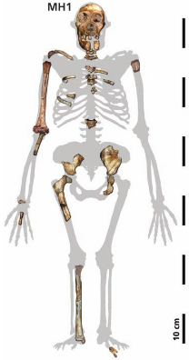

Australopithecus sediba

Two spectacular new hominid fossils found in a cave at Malapa in South Africa in 2008 and 2009 have been assigned to a new species, Australopithecus sediba ('sediba' means 'wellspring' in the local seSotho language). Discovered by a team led by Lee Berger and Paul Dirks, it is claimed by them to be the best candidate yet for an immediate ancestor to the genus Homo. The fossils are between 1.78 and 1.95 million years old, about the same date of the oldest Homo erectus fossils.
The first fossil, MH1, found by Lee Berger's son Matthew, is an almost complete skull and partial skeleton of an 11 to 12 year old boy. The second fossil, MH2, is a partial skeleton of an adult female, including some jaw fragments. The boy's brain has a typical australopithecine size of 420cc, compared to the smallest Homo brain of 510cc. Both skeletons are small, about 130cm (4'3") tall.
Au. sediba is most similar to, and quite likely descended from, Au. africanus. The upper limbs are long, and similar to other australopithecines. Many features of the hip, knee and ankle bones show it was bipedal, like other australopithecines, but the foot bones are still quite primitive. However Berger et al. list many other features of the skull, teeth, and pelvis in which it resembles early Homo fossils.
The discoverers have suggested that Au. sediba might be ancestral to either Homo habilis or Homo rudolfensis, or that it might be a closely related sister group to Homo - not a direct ancestor, but a close cousin. Anatomically sediba would be a plausible Homo ancestor, but as the authors admit, these two individuals existed after the earliest known Homo fossils (at about 2.3 million years), so they can't be human ancestors. However, it's not impossible that the sediba species had already existed for a few hundred thousand years and that early members of it could have been human ancestors.
Interestingly, prominent scientists quoted in the media have split fairly evenly on the question of whether sediba should have been assigned to Homo or Australopithecus - Bill Kimbel, Don Johanson, Susan Anton and Colin Groves went for Homo, while Meave Leakey, Tim White and Ron Clarke didn't. Some scientists have even suggested that it may be a late-surviving variant of Au. africanus.
However, the authors argued that the overall body plan was australopithecine, and hence put it in that genus. This seems to be the conservative and safest plan; even if they are right in their claims about sediba, the fossils do not seem out of place in Australopithecus, whereas putting them in Homo would have run the risk of needing to reclassify them later if they did not turn out to be very closely related to Homo. It would also, as Chris Stringer pointed out in an interview, require "a major redefinition" of the genus Homo.
In summary, it's an important discovery even though we don't yet know exactly how it fits into the family tree and what it means for human origins. Refreshingly, the discoverers have been fairly restrained in their claims about the fossil, and are keeping other options in mind.
The creationist response
The creationist organization Answers In Genesis has already taken note of the fossil. One might have expected that such small, and small-brained, fossils would be dismissed as apes. A few years ago, I'm sure AIG would have done so unhesitatingly. But AIG has strongly backed the idea that the similarly-sized Hobbit from Flores is a pathological human. Because of that, and probably also because some scientists have said Au. sediba should have been classified as Homo, AIG was surprisingly cautious. After referring to a quote by Berger that the small brain size of sediba (an australopithecine feature) is similar to that of the Flores Hobbit, AIG says that:
Berger's comment suggests the Australopithecus sediba fossils may in fact be misclassified Homo individuals who were fully human.and
Creationists must be cautious interpreting news like this.
But whatever happened to this earlier claim by AIG:
When complete fossils are found, they are easy to assign clearly as either 'ape' or human, there are only 'ape-men' where imagination colored by belief in evolution is applied to fragmented bits and pieces.
What happened to it is that creationists have been burned by reality: there are too many cases where creationists have classified fossils differently, and even cases of creationists changing their mind about some fossils. In spite of there being an almost complete skull of sediba, AIG still can't decide whether it's an ape or a human. If they can't tell if it's an ape or a human, they obviously can't rule out the possibility that it is an intermediate. The fact that they can't tell is strong evidence that it is intermediate, because modern apes and humans are extremely easy to distinguish.
Brian Thomas of the Institute for Creation Research also wrote about sediba. Unlike AIG, ICR had no hesitation in calling it an ape. Thomas even disputes the claim that sediba was bipedal, saying
... in neither A. ramidus' nor Au sediba's remains were found the relevant hip bones to even make such a determination!Odd. MH1 has a good specimen of the os coxa bone, more commonly known as "the hip bone", which is, funnily enough, the "relevant hip bone" for diagnosing locomotion. And let's not forget that Berger et al. said that the hip, knee and ankle bones all show evidence of bipedality. I think the experts have a bit more credibility here than the ICR's science writer.
Another creationist to have written about Au. sediba is Todd Wood, whose Baraminological analysis places sediba, along with H. habilis and H. rudolfensis, among humans. Other creationists are not going to like that result, because sediba is far more similar to africanus or afarensis (Lucy) than it is to modern humans. If you take it as an article of faith that human evolution didn't happen and that classifying hominids is merely a matter of working out how best to divide them into apes and humans (and that is almost always the creationist approach), then it really is a no-brainer to classify sediba as an ape (I'm sure AIG will come to that conclusion soon too). I'm impressed by Wood's integrity in accepting his conclusion rather than tweaking his analysis until he got a more convenient result, because it is going to be very difficult to reconcile with creationism. If you invite sediba into the human family, then what's to stop africanus and Lucy joining as well?
One last gripe: it was depressing to see how many newspaper headlines used the term "missing link". It's a misleading and meaningless term, as Carl Zimmer explains well.
See also my Panda's Thumb blog post: Australopithecus sediba and the creationist response
References
Australopithecus sediba: a new species of Homo-like Australopith from South Africa, by Berger et al. 2010. Science 328:195-204.
Yet Another "Missing Link", by Carl Zimmer
News to Note, April 10, 2010, by Answers in Genesis
A New Evolutionary Link?, by Brian Thomas, Institute for Creation Research
Baraminological analysis places Homo habilis, Homo rudolfensis, and Australopithecus sediba in the human holobaramin, by Todd Wood
This page is part of the Fossil Hominids FAQ at the talk.origins Archive.
Home Page |
Species |
Fossils |
Creationism |
Reading |
References
Illustrations |
What's New |
Feedback |
Search |
Links |
Fiction
http://www.talkorigins.org/faqs/homs/sediba.html, 06/30/2010
Copyright © Jim Foley
|| Email me